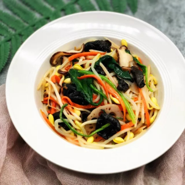

介绍：我是通信1903班的邹湘宇，来自湖南娄底，最喜欢的杂志是青春美文。
照片：
美食：
在一起期间，除了做好个人防护，尽量避免外出聚集以外，给自己和家人安排合理的饮食也非常重要。
告别重口味，高热量的各种垃圾食物， 吃营养丰富的蔬果美食，低脂健康富含维生素，提升免疫能力。

冬瓜丸子汤浓香不油腻，鲜美可口。冬瓜性味甘，淡，清热，化痰，解渴等功效。
其中糖类，维生素含量较高且不含脂肪，营养价值非常丰富。
盐水猪肝是一道鲜嫩无比，入口绵软细腻的家常菜。
猪肝脏富含丰富的维生素A,大蒜具有杀菌消炎的作用。
虾仁炒西兰花是一道中国名菜，西兰花中的营养成分，不仅含量高，而且是十分全面，
包括蛋白质，碳水化合物，脂肪，矿物质，维生素C和胡萝卜素等。